Prepared by Muhammad Tayyab, Subject Specialist Mathematics, Govt Christian High School Daska
📌 Based on National Curriculum 2023 / PECTAA Syllabus
📖 What's Inside: This exercise covers graphing absolute value functions (\( f(x) = |x-h| + k \)), finding vertex and axis of symmetry, solving absolute value equations (\( |ax+b| = c \)), and solving absolute value inequalities (\( |ax+b| \le c \) and \( |ax+b| > c \)) with number line representation. Perfect for Punjab Boards exam preparation.
📚 Related Resources – Chapter 4: Functions and Graphs
Class 10 Math Chapter 4 Exercise 4.2 – Absolute Value Functions: Complete Guide
Exercise 4.2 of Chapter 4 introduces students to absolute value functions – one of the most important function types in mathematics. Students learn to graph \( f(x) = |x-h| + k \), identify the vertex and axis of symmetry, and solve absolute value equations and inequalities. These skills are essential for understanding transformations and piecewise functions.
What You Will Learn
By working through Exercise 4.2, students master: graphing absolute value functions by finding the vertex and using symmetry, identifying the vertex \((h,k)\) from \( f(x) = |x-h| + k \), solving absolute value equations \( |ax+b| = c \), and solving absolute value inequalities \( |ax+b| \le c \) and \( |ax+b| > c \) with number line representation.
Topics Covered in This Exercise
- Graphing Absolute Value Functions – \( f(x) = |x-h| + k \) with vertex \((h,k)\)
- Axis of Symmetry – vertical line \( x = h \)
- Absolute Value Equations – \( |ax+b| = c \) with two solutions
- Absolute Value Inequalities – \( |ax+b| \le c \) and \( |ax+b| > c \)
- Number Line Representation – intervals and solution sets
Why Exercise 4.2 Is Important
Exercise 4.2 builds on the function concepts from Exercise 4.1 and introduces absolute value functions. Board exam papers frequently feature questions on graphing absolute value functions and solving absolute value equations and inequalities. These skills are essential for higher mathematics.
Punjab Board Preparation
Students preparing for board exams under any of the 10 BISE Punjab boards should prioritise this exercise. Graphing absolute value functions and solving absolute value inequalities are frequently tested topics. Practising every part of Q1, Q2, and Q3 by hand is highly recommended.
Exam Tips for Absolute Value Functions
- Remember: \( |x| = x \) if \( x \ge 0 \), and \( |x| = -x \) if \( x < 0 \).
- For \( f(x) = |x-h| + k \), vertex is \((h,k)\).
- For \( |ax+b| = c \), two solutions: \( ax+b = c \) and \( ax+b = -c \).
- For \( |ax+b| \le c \), solution is \(-c \le ax+b \le c\).
- For \( |ax+b| > c \), solution is \( ax+b < -c \) or \( ax+b > c \).
Common Mistakes Students Make
- Forgetting the vertex is \((h,k)\) and reversing signs.
- Not checking if \( c \) is negative in absolute value equations.
- Confusing \( \le \) and \( < \) when writing intervals.
- Forgetting to flip inequality sign when multiplying by negative.
📖 Exercise 4.2 – Solved Problems
Vertex: \( x - 2 = 0 \Rightarrow x = 2 \), vertex \((2,0)\). Symmetric about \(x=2\).
\[ \begin{array}{c|c|c|c|c|c} x & 0 & 1 & 2 & 3 & 4 \\ \hline f(x)=|x-2| & 2 & 1 & 0 & 1 & 2 \end{array} \]
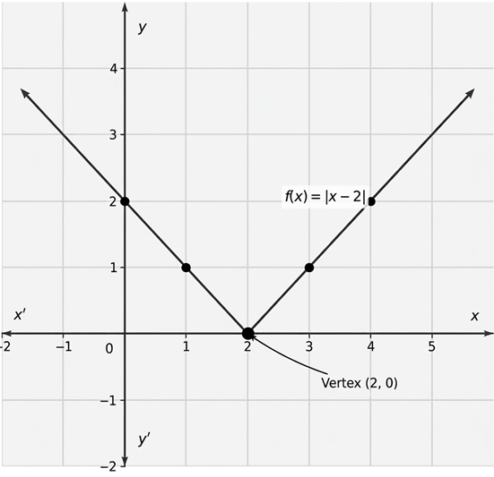
Vertex at \(x=-3\) ⇒ \((-3,-4)\). Table:
\[ \begin{array}{c|c|c|c|c|c} x & -5 & -4 & -3 & -2 & -1 \\ \hline f(x)=3|x+3|-4 & 2 & -1 & -4 & -1 & 2 \end{array} \]
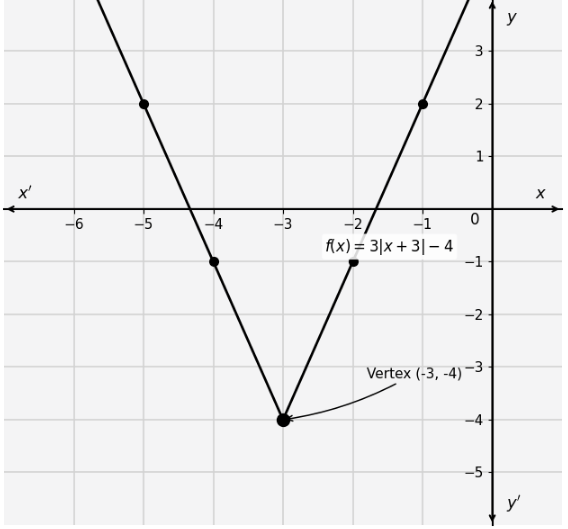
Vertex at \((0,0)\). Table: \(x=-2,10\); \(x=-1,5\); \(x=0,0\); \(x=1,5\); \(x=2,10\).
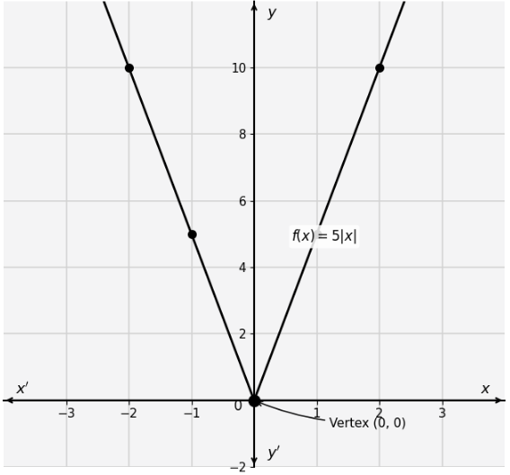
Vertex: \(x=-2\) → \((-2,3)\). Symmetry about \(x=-2\).
\[ \begin{array}{c|c|c|c|c|c} x & -4 & -3 & -2 & -1 & 0 \\ \hline f(x) & 5 & 4 & 3 & 4 & 5 \end{array} \]
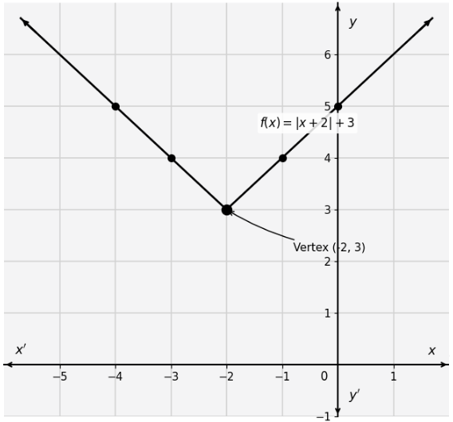
Vertex: \(x=-4\) → \((-4,-3)\). Values: \(x=-6 \to 1\), \(-5 \to -1\), \(-4 \to -3\), \(-3 \to -1\), \(-2 \to 1\).
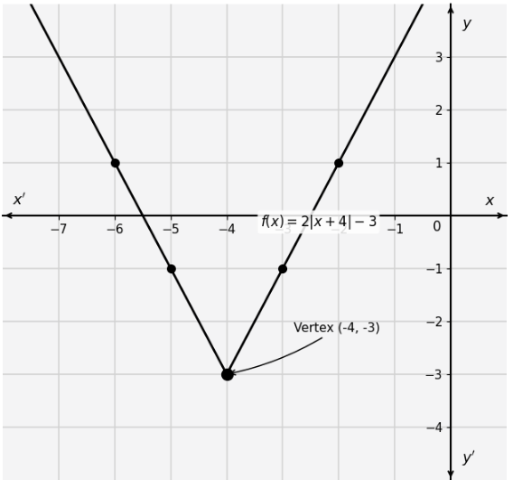
Vertex: \(x=-1\) ⇒ \((-1,-6)\).
\[ \begin{array}{c|c|c|c|c|c} x & -3 & -2 & -1 & 0 & 1 \\ \hline f(x) & -2 & -4 & -6 & -4 & -2 \end{array} \]
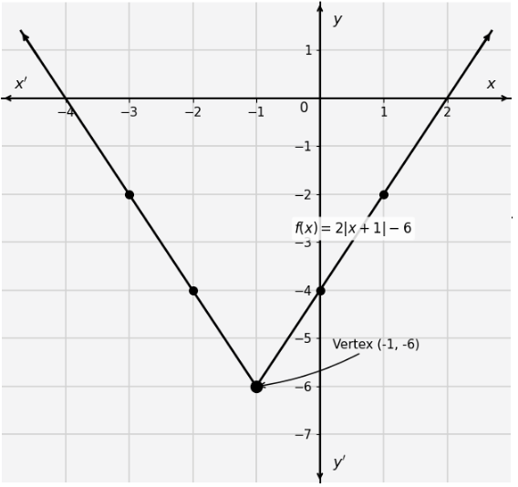
\[ \begin{aligned} |x-2| &= 6 \\ \pm (x-2) &= 6 \;\Longrightarrow\; x-2 = \pm 6 \\[4pt] \text{Case 1:}&\quad x-2 = 6 \;\Rightarrow\; x = 8 \\ \text{Case 2:}&\quad x-2 = -6 \;\Rightarrow\; x = -4 \end{aligned} \] Solution set: \( \{-4,\; 8\} \).
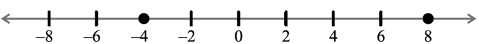
\[ \begin{aligned} |2x+1| &= 7 \;\Rightarrow\; 2x+1 = \pm 7 \\ 2x+1 &= 7 \;\Rightarrow\; 2x = 6 \;\Rightarrow\; x = 3 \\ 2x+1 &= -7 \;\Rightarrow\; 2x = -8 \;\Rightarrow\; x = -4 \end{aligned} \] \( S.S = \{-4,\;3\} \)
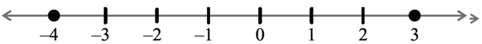
\[ \begin{aligned} 4x-9 &= \pm 3 \\ 4x-9 = 3 &\;\Rightarrow\; 4x = 12 \;\Rightarrow\; x = 3 \\ 4x-9 = -3 &\;\Rightarrow\; 4x = 6 \;\Rightarrow\; x = \frac{3}{2} = 1\frac{1}{2} \end{aligned} \] \( S.S = \left\{1\frac{1}{2},\; 3\right\} \)
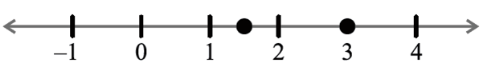
\[ \begin{aligned} 7-2x &= \pm 1 \\ 7-2x = 1 &\;\Rightarrow\; -2x = -6 \;\Rightarrow\; x = 3 \\ 7-2x = -1 &\;\Rightarrow\; -2x = -8 \;\Rightarrow\; x = 4 \end{aligned} \] \( S.S = \{3,\;4\} \)
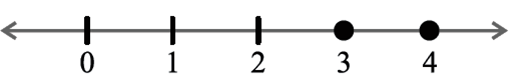
\[ \begin{aligned} |5x+8| &\le 3 \;\Longrightarrow\; -3 \le 5x+8 \le 3 \\ \text{Left:}&\quad -3 \le 5x+8 \;\Rightarrow\; -11 \le 5x \;\Rightarrow\; x \ge -\frac{11}{5} = -2\frac{1}{5} \\ \text{Right:}&\quad 5x+8 \le 3 \;\Rightarrow\; 5x \le -5 \;\Rightarrow\; x \le -1 \end{aligned} \] Solution: \(\left[-2\frac{1}{5},\; -1\right]\)
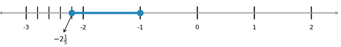
\[ \begin{aligned} |4x-12| &\le 0 \;\Longrightarrow\; 4x-12 = 0 \;\Rightarrow\; x = 3 \end{aligned} \] \( S.S = \{3\} \) (single point).
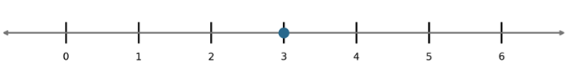
\[ \begin{aligned} |3-4x| > 0 &\;\Longrightarrow\; 3-4x \neq 0 \\ &\;\Longrightarrow\; x \neq \frac{3}{4} \end{aligned} \] Solution: \( (-\infty,\frac{3}{4}) \cup (\frac{3}{4},\infty) \)
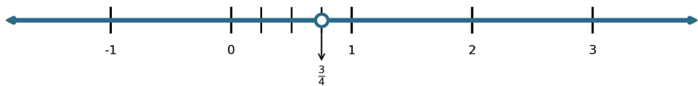
\[ \begin{aligned} 1 - 2\left|\frac{3}{2}x - 5\right| &> -3 \\ - 2\left|\frac{3}{2}x - 5\right| &> -4 \\ \left|\frac{3}{2}x - 5\right| &< 2 \\ -2 < \frac{3}{2}x - 5 &< 2 \\ 3 < \frac{3}{2}x &< 7 \\ 2 < x &< \frac{14}{3} = 4\frac{2}{3} \end{aligned} \] \( S.S = \left(2,\; 4\frac{2}{3}\right) \)
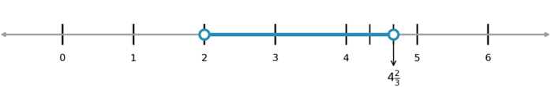
\[ \begin{aligned} |3x-2| &\le 12 \;\Longrightarrow\; -12 \le 3x-2 \le 12 \\ -10 &\le 3x \le 14 \\ -\frac{10}{3} &\le x \le \frac{14}{3} \end{aligned} \] Solution: \(\left[-3\frac{1}{3},\; 4\frac{2}{3}\right]\)
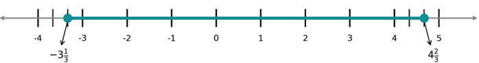
\[ \begin{aligned} |1-2x| > 5 &\;\Longrightarrow\; 1-2x < -5 \quad \text{or} \quad 1-2x > 5 \\ &\text{Case 1: } 1-2x < -5 \;\Rightarrow\; -2x < -6 \;\Rightarrow\; x > 3 \\ &\text{Case 2: } 1-2x > 5 \;\Rightarrow\; -2x > 4 \;\Rightarrow\; x < -2 \end{aligned} \] Solution: \( (-\infty,-2) \cup (3,\infty) \)
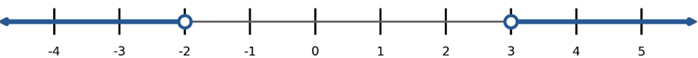
📝 Multiple Choice Questions (Chapter 4 Practice)
1. The vertex of \( f(x) = |x-3| + 2 \) is:
For \( f(x) = |x-h| + k \), the vertex is \((h,k)\). Here \( h=3, k=2 \).
2. The solutions of \( |x-4| = 5 \) are:
\( |x-4| = 5 \implies x-4 = \pm 5 \implies x = 9 \) or \( x = -1 \).
3. The solution of \( |2x+1| \le 3 \) is:
\( -3 \le 2x+1 \le 3 \implies -4 \le 2x \le 2 \implies -2 \le x \le 1 \).
4. The graph of \( f(x) = |x| \) is symmetric about:
\( f(-x) = |-x| = |x| = f(x) \), so the graph is symmetric about the \(y\)-axis.
5. The solution of \( |3x-6| > 0 \) is:
\( |3x-6| > 0 \implies 3x-6 \neq 0 \implies x \neq 2 \).
📈 Key Concepts – Absolute Value Functions
- Absolute Value Definition: \( |x| = \begin{cases} x & x\ge 0 \\ -x & x<0 \end{cases} \)
- Graph Vertex: For \( f(x)=a|x-h|+k \), vertex at \((h,k)\), axis \(x=h\)
- Equation Solution: \( |X| = a \Rightarrow X = \pm a \) (if \(a\ge0\))
- Inequality: \( |X| < a \Rightarrow -a < X < a\); \( |X| > a \Rightarrow X < -a \text{ or } X > a\)
❓ Frequently Asked Questions
What is taught in Exercise 4.2 of Class 10 Math Chapter 4?
Exercise 4.2 covers absolute value functions: graphing \( f(x) = |x-h| + k \), finding the vertex and axis of symmetry, solving absolute value equations \( |ax+b| = c \), and solving absolute value inequalities \( |ax+b| \le c \) and \( |ax+b| > c \) with number line representation.
How many questions are there in Chapter 4 Exercise 4.2?
Exercise 4.2 has 3 main questions: Question 1 has 6 parts covering graphing absolute value functions, Question 2 has 4 parts covering solving absolute value equations, and Question 3 has 6 parts covering solving absolute value inequalities.
What is the vertex of \( f(x) = |x-h| + k \) ?
The vertex of \( f(x) = |x-h| + k \) is at the point \( (h, k) \). The graph is V-shaped and symmetric about the vertical line \( x = h \).
How do you solve \( |ax+b| = c \) ?
To solve \( |ax+b| = c \), set \( ax+b = c \) and \( ax+b = -c \). Both solutions are valid if \( c \ge 0 \).
How do you solve \( |ax+b| \le c \) ?
To solve \( |ax+b| \le c \), rewrite as \( -c \le ax+b \le c \) and solve for \( x \). The solution is a closed interval.
Is this solution according to the PECTAA syllabus?
Yes, these solutions are prepared according to the PECTAA / National Curriculum 2023 syllabus for Class 10 Mathematics.
Is this Exercise 4.2 solution valid for all Punjab Boards?
Yes, the content follows the unified Punjab textbook and is applicable to students of all 10 BISE Punjab boards.
Are solved PDF notes available for Exercise 4.2?
Yes, a complete solved PDF for Exercise 4.2 is embedded on this page and available to download for free.
Can I download the Chapter 4 Exercise 4.2 solution as a PDF?
Yes, use the Download PDF button on this page to save the complete solved Exercise 4.2 notes to your device.
Is Exercise 4.2 important for Class 10 board exams?
Yes, absolute value functions, equations, and inequalities are frequently tested in board exams. Exercise 4.2 builds essential skills in graphing and solving absolute value problems.
Who prepared these Class 10 Math Chapter 4 notes?
These notes were prepared by Muhammad Tayyab, Subject Specialist Mathematics at Govt Christian High School Daska, for Hira Science Academy.